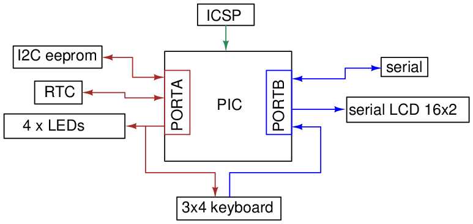
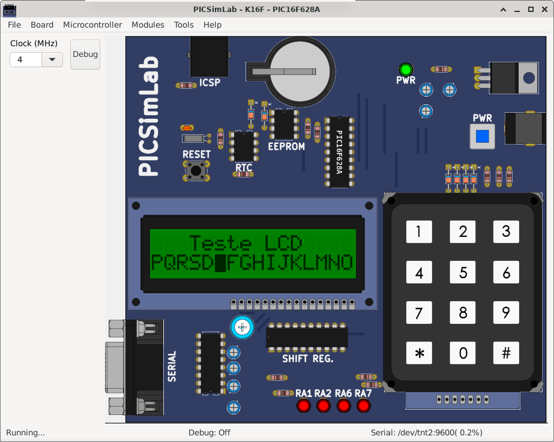

4.3 K16F
It emulates an didactic board developed by author that uses one PIC16F84, PIC16F628 or PIC16F648 of PICSim backend simulator.


The code examples can be loaded in PICSimLab menu Help->Examples.
The source code of board K16F examples using MPLABX and XC8 compiler are in the link: board_K16F.